GdPtBi
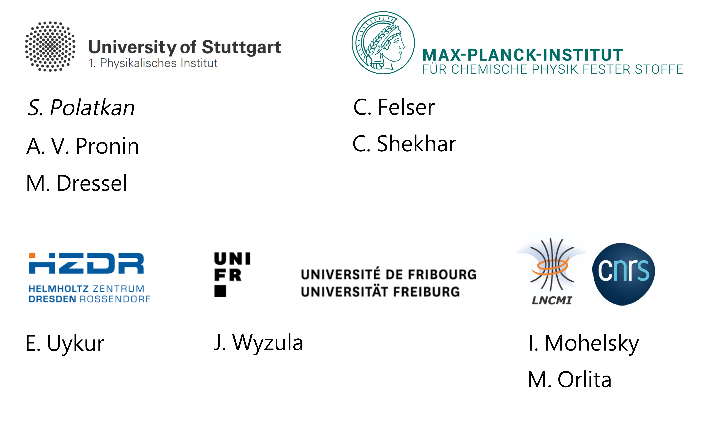Topological Half-Heusler Materials
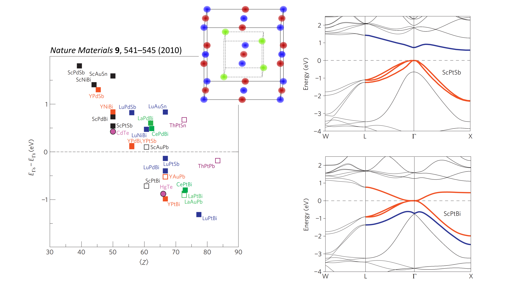GdPtBi - Effective Zeeman Splitting
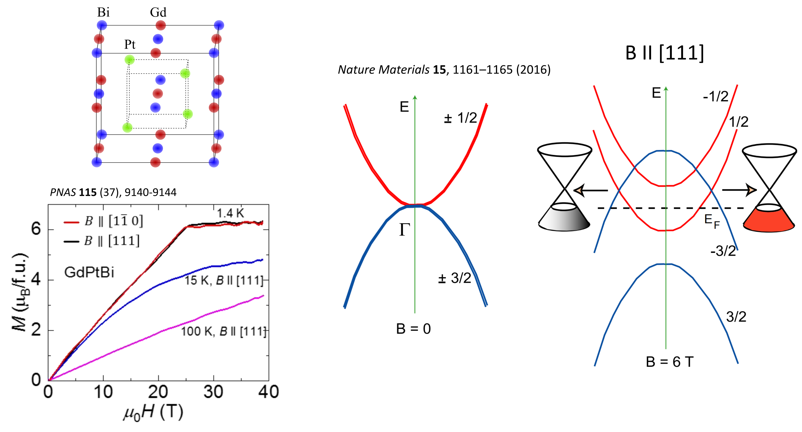
Landau Levels for Linear Bands
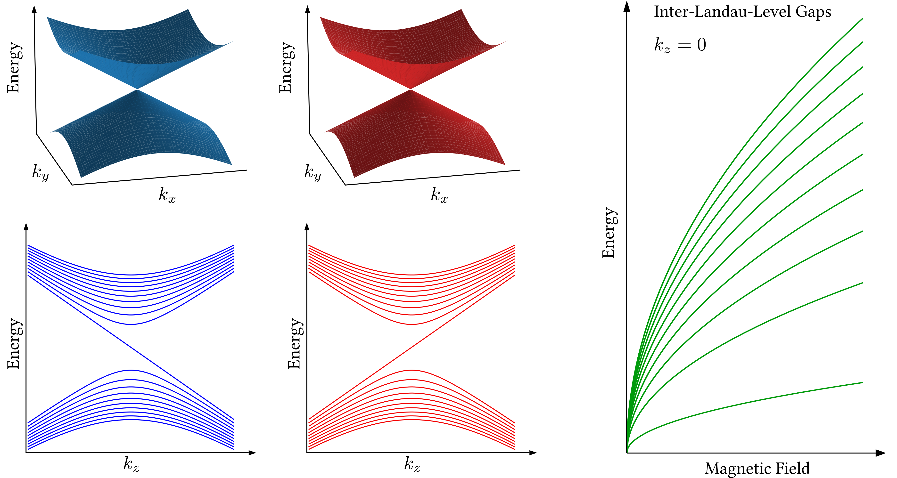
GdPtBi - Magneto-Optical Reflectivity
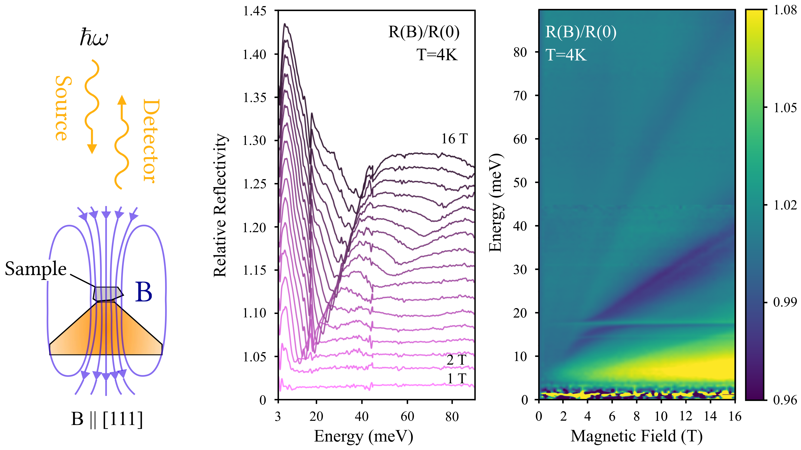GdPtBi - Magneto-Optical Reflectivity
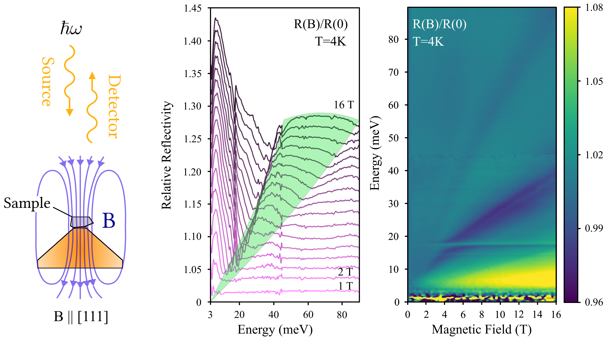Zeeman-shifted Parabolic Model
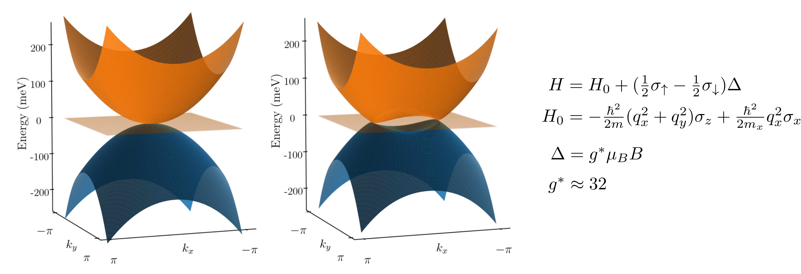Optical Conductivity - Equal Zeeman Shifts


Optical Conductivity - Equal Zeeman Shifts

Optical Conductivity - Different Zeeman Shifts

Optical Conductivity - Different Zeeman Shifts

DFT - No Spin Polarization
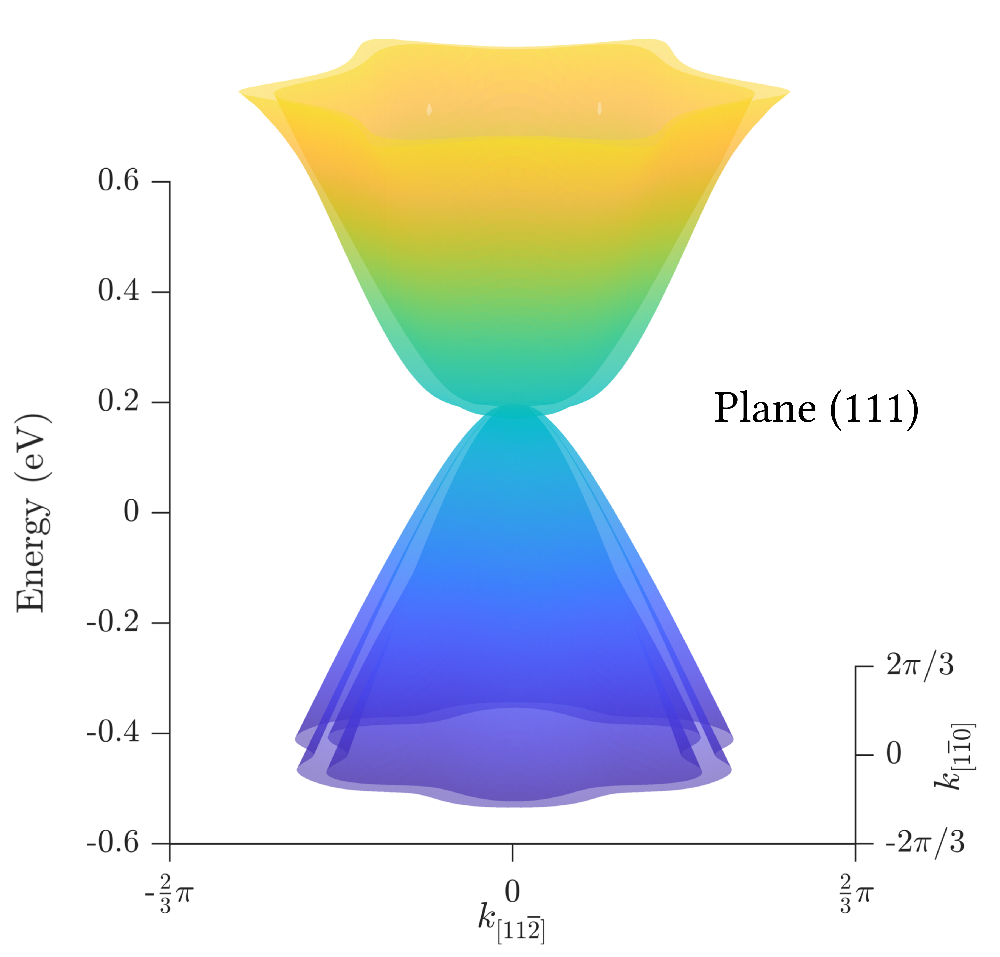DFT - No Spin Polarization
DFT - Full Spin Polarization
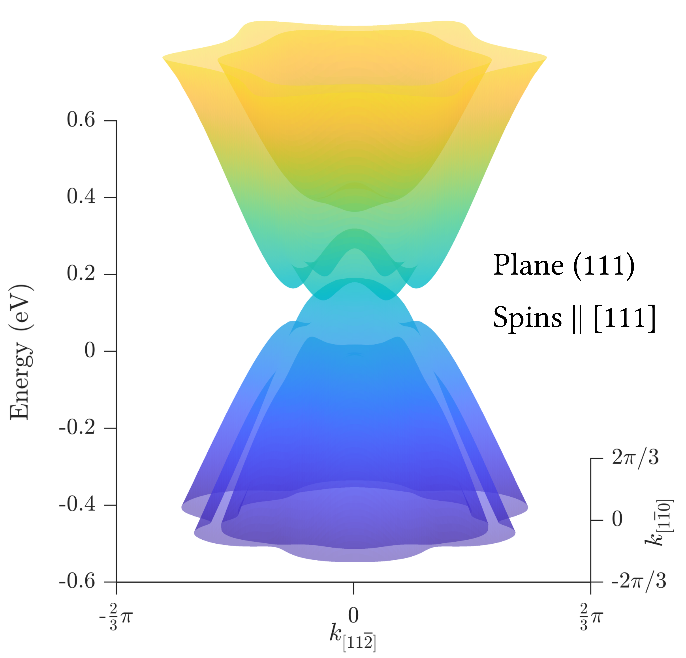DFT - Full Spin Polarization
k·p Model
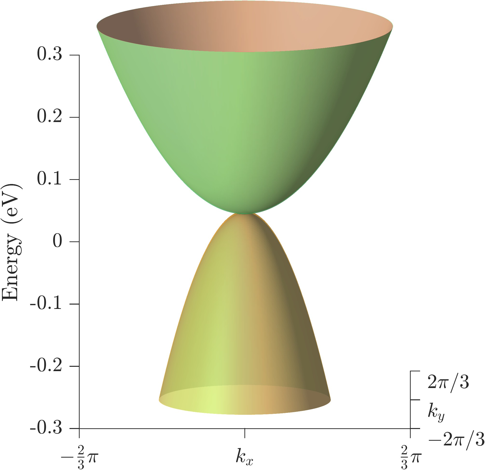DFT - Full Spin Polarization
k·p Model
DFT - Full Spin Polarization
k·p Model
DFT - Full Spin Polarization
k·p Model
In conclusion...
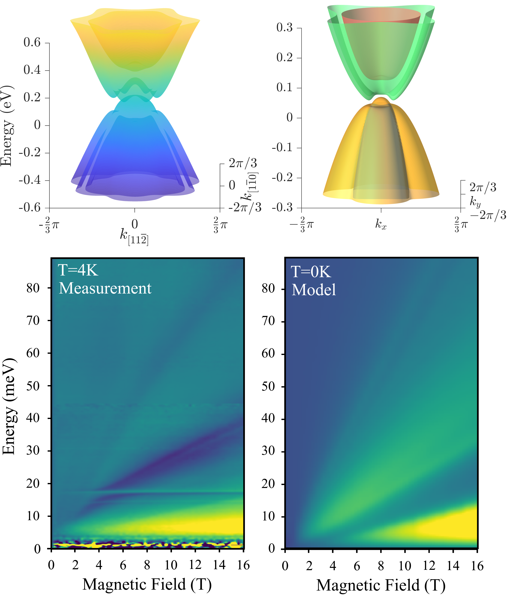
- We observe two features unusually broadening with field.
- DFT and k·p model bring observations in line with a Zeeman-shifted band structure.
- We observe the first optical footprint of the magnetically tunable Weyl semimetal GdPtBi.